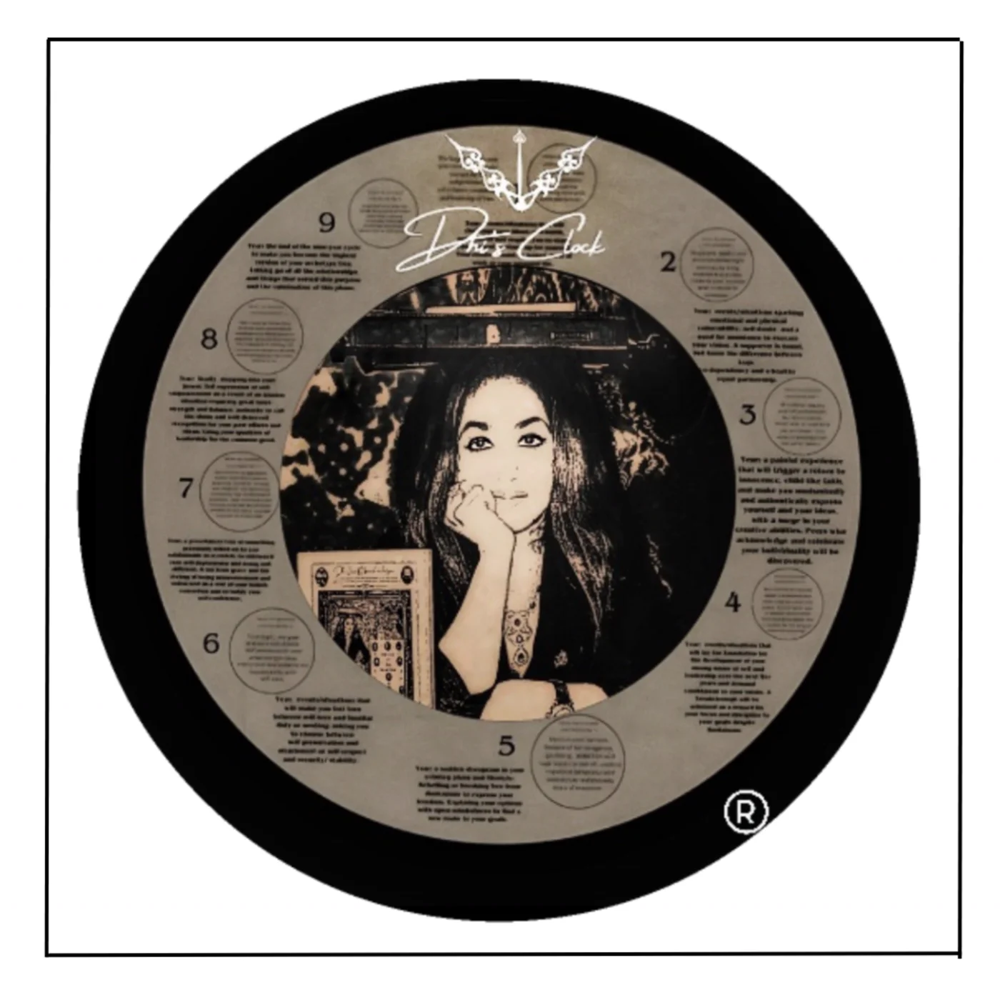

A life in sync
with your time.
Meet Saudamini Mishra, the author and inventor behind Dhi’s Clock.
On purpose, personal time
and becoming yourself.
The person
behind the clock.
Saudamini Mishra brings her work as an author, inventor and metaphysician to a deeply personal question: how do we return to who we really are?
Her answer begins with your own sense of time.
Dhi’s work explores life purpose, personal archetypes and the patterns that repeat in our lives. She created Dhi’s Clock to make those ideas part of everyday reflection.
At its heart is the belief that becoming yourself means finding your way back to the person you were before the world told you who to be.
Get in touch with Dhi

A personal perspective on the passage of time.
Your time.
Your purpose.
Dhi’s Clock.
A daily reminder of when to act, when to pause, and when to begin again.
Dhi’s Clock connects your archetype with recurring daily, monthly and yearly cycles. Designed as a private guide, it offers a way to reflect without sitting through a live consultation.
Understand the conceptA cycle of nine.
A rhythm of your own.
Each number marks a stage. The cycle moves from 1 to 9, then begins again.
From beginnings to release
In Dhi’s framework, 1 is a time to begin. Stage 9 represents endings and letting go. The stages in between give the cycle its changing themes.
The philosophy
Dhi sees life purpose as something that shapes everyday experience, rather than a topic reserved for philosophical discussion. Her framework connects recurring personal and professional patterns with the ways people use their time.
The clock is intended to identify an individual’s archetype and show how its purpose relates to each day, month and year.
The mission
Dhi describes the clock as a preventive and protective tool. Her mission is to offer guidance about what to do and what to avoid, with the aim of helping people navigate disappointment, failure and deception.
The vision
The vision combines customized settings, a simple design and private guidance for people who find it difficult to express themselves. Dhi’s stated ambitions include emotional well-being, crime prevention, addressing social injustice and a more harmonious world.
Words that travel.
Work that connects.
Literary gatherings, published features and recognition from Dhi’s archive.
Explore the gallery


A glimpse into Dhi’s world.
From the stage to the story behind the logo.

The story behind the logo
A portrait, her books and the identity of Dhi’s Clock. Explore the original images that connect them.
Select an image to view the original in full.
“Ultimately, the purpose of one’s life is to get back to being the maturer version of one’s 8-year-old self.”
Saudamini Mishra On becoming ourselves
From Dhi’s journal.
View all writingEvery conversation
has a beginning.
Curious about Dhi’s work or Dhi’s Clock?
Get in touch to start a conversation.